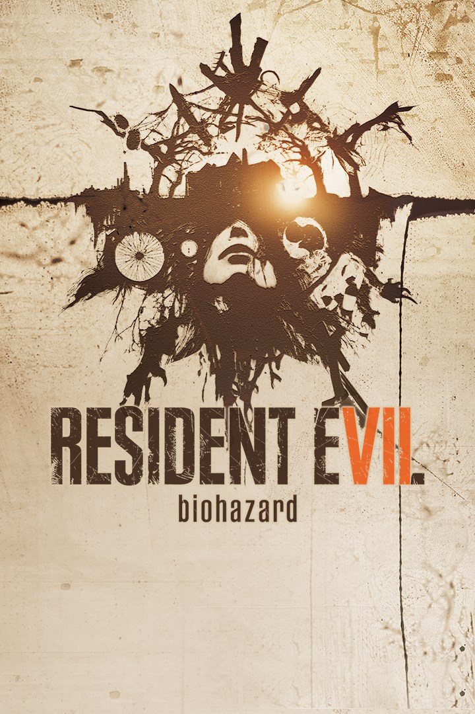

GUIA DE CONQUISTAS
Resident Evil 7: Biohazard

Sobre o jogo
Guia de platina organizado em etapas, com atenção aos finais, documentos, colecionáveis e desafios de conclusão.
Dificuldade: 4/10 · Tempo estimado: 20–30 horas · Troféus: 38 (1 platina, 3 ouro, 12 prata e 22 bronze) · Jogadores: 1
Organização dos troféus
Lista de referência: 38 (1 platina, 3 ouro, 12 prata e 22 bronze).
A página apresenta o total e a distribuição geral informados para esta lista. A relação individual de nomes e descrições poderá ser adicionada em uma atualização posterior.
📌 Ordem recomendada
1️⃣ História principal
- Complete a campanha pela primeira vez.
- Explore a propriedade Baker e as áreas acessíveis.
- Encontre documentos e itens colecionáveis durante a exploração.
- Complete os objetivos relacionados à história e conclua o primeiro final.
- Preserve um salvamento antes das decisões importantes.
2️⃣ Troféus relacionados aos finais
- Consiga o primeiro final.
- Retorne ao ponto de decisão utilizando outro salvamento.
- Consiga o segundo final.
- Confira os troféus relacionados às duas conclusões.
3️⃣ Exploração e colecionáveis
- Encontre os 32 documentos.
- Destrua as 20 estatuetas Mr. Everywhere.
- Colete as moedas antigas, observando que a quantidade exigida varia conforme a dificuldade.
- Encontre as fitas VHS.
- Explore todas as áreas acessíveis e conclua os objetivos relacionados aos itens especiais.
4️⃣ Desafios especiais
- Complete a campanha dentro do limite de tempo exigido.
- Conclua os objetivos de gerenciamento de inventário.
- Verifique os desafios de sobrevivência e os requisitos de conclusão com restrições.
5️⃣ Dificuldade Madhouse
- Desbloqueie a dificuldade Madhouse.
- Complete a campanha nessa dificuldade.
- Consiga as moedas antigas específicas dessa dificuldade.
- Confira os troféus relacionados à conclusão.
6️⃣ Limpeza final
- Confira os documentos restantes.
- Verifique as estatuetas ainda não encontradas.
- Complete os objetivos pendentes e conquiste os troféus restantes.
- Desbloqueie a platina.
Avisos sobre objetivos perdíveis
- Há objetivos perdíveis: acompanhe documentos, estatuetas e decisões da história desde a primeira campanha.
- Mantenha salvamentos separados antes das decisões importantes para facilitar a obtenção dos dois finais.
- A quantidade de moedas antigas exigida pode variar conforme a dificuldade.
Use esta seção como conferência antes de avançar em capítulos, decisões ou etapas irreversíveis.
Colecionáveis e objetivos secundários
- 32 documentos (arquivos).
- 20 estatuetas Mr. Everywhere.
- Moedas antigas, com requisitos específicos por dificuldade.
- 4 fitas VHS.
← Voltar à biblioteca